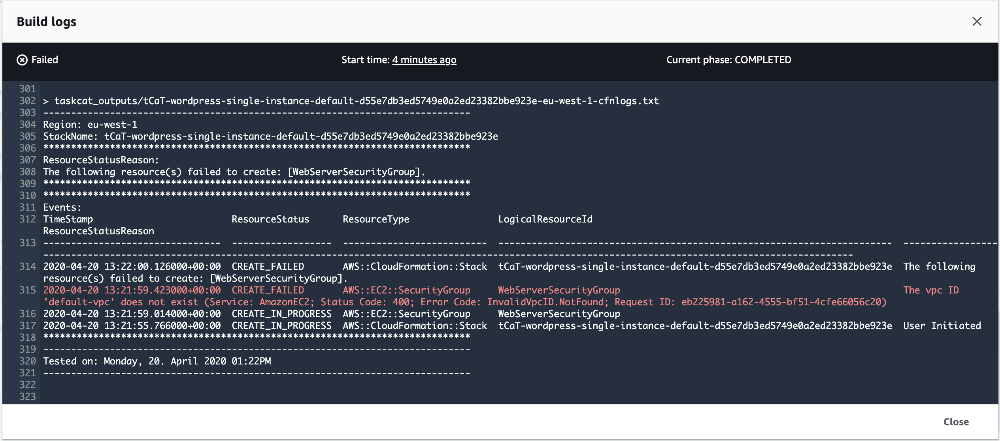

Linting a Template
Our Security group defined on the wordpress/wordpress-single-instance.yaml file on line 141 is too permissive because we have a range of ports open. Let’s narrow the range to only the one port we need for Wordpress to work. In the code sample below, you will note the Security Group resource restricts to only port 80.
WebServerSecurityGroup:
Type: AWS::EC2::SecurityGroup
Properties:
GroupDescription: "Enable HTTP access via port 80 locked down to the load balancer + SSH access"
VpcId: "default-vpc"
SecurityGroupIngress:
- CidrIp: 0.0.0.0/0
FromPort: 80
IpProtocol: tcp
ToPort: 80
Commit the changes and push it to CodeCommit:
git add wordpress/wordpress-single-instance.yaml
git commit -m "Closed down SG to port 80"
git push AWSCodeCommit master
The cfn-nag tool parses a collection of CloudFormation templates and applies rules to find code patterns that could lead to insecure infrastructure. The results of the tool include the logical resource identifiers for violating resources and an explanation of what rule has been violated.

While there are quite a number of particular rules the tool will attempt to match, the rough categories are:
- IAM and resource policies (S3 Bucket, SQS, etc.)
- Matches policies that are overly permissive in some way (e.g. wildcards in actions or principals)
- Security Group ingress and egress rules
- Matches rules that are overly liberal (e.g. an ingress rule open to 0.0.0.0/0, port range 1-65535 is open)
- Access Logs
- Looks for access logs that are not enabled for applicable resources (e.g. Elastic Load Balancers and CloudFront Distributions)
- Encryption
- (Server-side) encryption that is not enabled or enforced for applicable resources (e.g. EBS volumes or for PutObject calls on an S3 bucket)
All the rules are considered either warnings or failures. Any discovered failures will result in a non-zero exit code, while warnings will not. In the context of a delivery pipeline, cfn-nag should likely stop the pipeline in the case it finds failures, but perhaps not stop the pipeline in the case of just warnings.
Which rules are considered warnings and which are considered errors is a little “loose” or subjective.
The cfn-nag tool includes rules that apply universally across environments and enterprises (you can still filter which ones you want to suppress). That said, the product supports the development of custom rules to allow enterprise-specific rules for compliance and security controls.
However, the execution is still failing. There is one thing left to solve. Can you guess what the problem is?

2020-04-20 13:21:59.423000+00:00 CREATE_FAILED AWS::EC2::SecurityGroup WebServerSecurityGroup The vpc ID 'default-vpc' does not exist (Service: AmazonEC2; Status Code: 400; Error Code: InvalidVpcID.NotFound; Request ID: eb225981-a162-4555-bf51-4cfe66056c20)